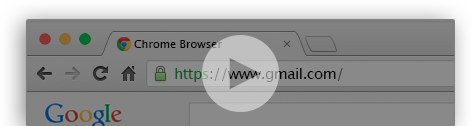

The faster way to acces your favorite websites!
Getting started
GOTO is a Chrome extension that helps you navigate through all your most favorite websites. It allows to create ‘textual’ shortcuts that you can use directly within the url bar.
Bring your shorcuts with you everywhere as they will be associated with your Google account.
Although the extension is asking for a lot of permission, it is only to acces to easy redirection functionnalities. The code is open source and can be reviewed easily if any doubt concerning privacy issues.
Where to get it?
GOTO is only available for chrome at the time, and can be downloaded directly from the Chrome Web Store. Feel free to rate it!
How to use it?
1 Let’s assume you that you created from the extention a new shortut ‘g’ associated to the url of gmail:
g
https://www.gmail.com
You now just have to use this shortcut wihtin the URL bar, end it with a ’/’ , and press endter. You will then be redirected to the associated URL:
Contribute
If you know you way around Javascript, there is plenty of simple ways to improve GOTO. Checkout the Github repository and don’t hesitate to sumbit a pull request!
Also, I would like to thank Pierre-Marie Dartus for his great contribution!
Alexis Fasquel